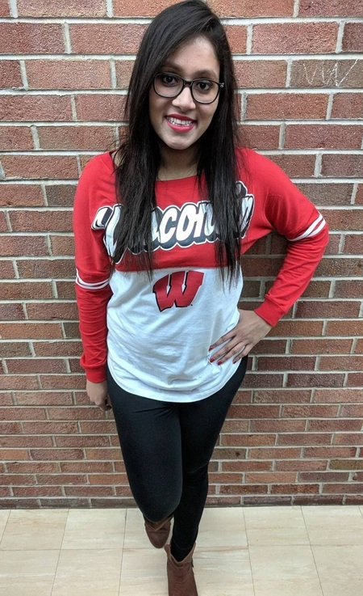

Haylee is a junior at the University of Wisconsin - Madison doing an honors major in Computer Science with a certificate in Mathematics. She is exploring the different areas of the discipline and has taken high level courses in Artificial Intelligence, Cryptography, Machine Organization, as well as Operating Systems, and is looking forward to taking the advanced Human-Computer Interaction course this upcoming fall. While she primarily programs in Java and occasionally C, she is also comfortable with C++, Scala and JavaScript.
This past summer she interned at Google where she worked on the interface of Google Drive’s Share dialog in JavaScript as well as developed a new feature for Inbox which involved embedding metadata in notification emails sent to users using Java. Haylee also had the opportunity to work with the team’s Product Manager and engineers from Europe to define the standards for some of the aspects of the feature. This semester she is currently interning at Lucid Software where she is working on an array of projects. One of the biggest ones she worked on involved setting up a server in Scala to handle changes made to Lucidchart subscriptions through it’s new AWS Marketplace listing. This upcoming summer Haylee will be returning to Google for a second internship during which she will work on the Search app for Android.
In her spare time she is working on developing a personal website using Angular 2, and also an Android application which will allow users to follow particular Twitter hashtags of their choice and receive notifications for any new posts which include that hashtag.
She is a strong supporter of increasing diversity in the workforce as well as the participation of women in technical fields, and is an undergraduate representative for WACM, the university’s chapter of ACM-W(ACM's Women in Computing) where she has helped organize many of the events that have been conducted with speakers and representatives from technology companies. Haylee was also a recipient of a scholarship from the organization to attend the Grace Hopper Celebration of Women in Computing last October, and one of the 60 female underclassmen selected from across the US to attend the Qualcomm Women's Collegiate Conference in January 2016.
This past summer she interned at Google where she worked on the interface of Google Drive’s Share dialog in JavaScript as well as developed a new feature for Inbox which involved embedding metadata in notification emails sent to users using Java. Haylee also had the opportunity to work with the team’s Product Manager and engineers from Europe to define the standards for some of the aspects of the feature. This semester she is currently interning at Lucid Software where she is working on an array of projects. One of the biggest ones she worked on involved setting up a server in Scala to handle changes made to Lucidchart subscriptions through it’s new AWS Marketplace listing. This upcoming summer Haylee will be returning to Google for a second internship during which she will work on the Search app for Android.
In her spare time she is working on developing a personal website using Angular 2, and also an Android application which will allow users to follow particular Twitter hashtags of their choice and receive notifications for any new posts which include that hashtag.
She is a strong supporter of increasing diversity in the workforce as well as the participation of women in technical fields, and is an undergraduate representative for WACM, the university’s chapter of ACM-W(ACM's Women in Computing) where she has helped organize many of the events that have been conducted with speakers and representatives from technology companies. Haylee was also a recipient of a scholarship from the organization to attend the Grace Hopper Celebration of Women in Computing last October, and one of the 60 female underclassmen selected from across the US to attend the Qualcomm Women's Collegiate Conference in January 2016.
